Vortrag zum Buch
Wir können uns die Zukunft leisten
Die 34 Folien des Vortrags zum Buch „Wir können uns die Zukunft leisten“: woher wir kommen, warum es ohne Reform nicht geht und was die Reform für den Staat und die Haushalte bis 2070 bedeutet. Als PDF 34 Folien, 3,4 MB.
TA R T ZUM S von 1 0 0 MUT ZUR ZUKUNFT · VORTRAG ZUM BUCH 69 aben en h Mensch ld als Wir können uns die mehr Ge rm. fo ohne Re von 100. Gegen h eute 63 Zukunft leisten Wie die meisten mehr Geld behalten, der Staat schuldenfrei wird und Deutschland aufblüht +604 € +1.373 € ab 2038 im Monat im Monat für eine Familie sinken die Steuern für einen Facharbeiter mit zwei Kindern für alle, im mittleren Fall Tomas Hecker · November 2026
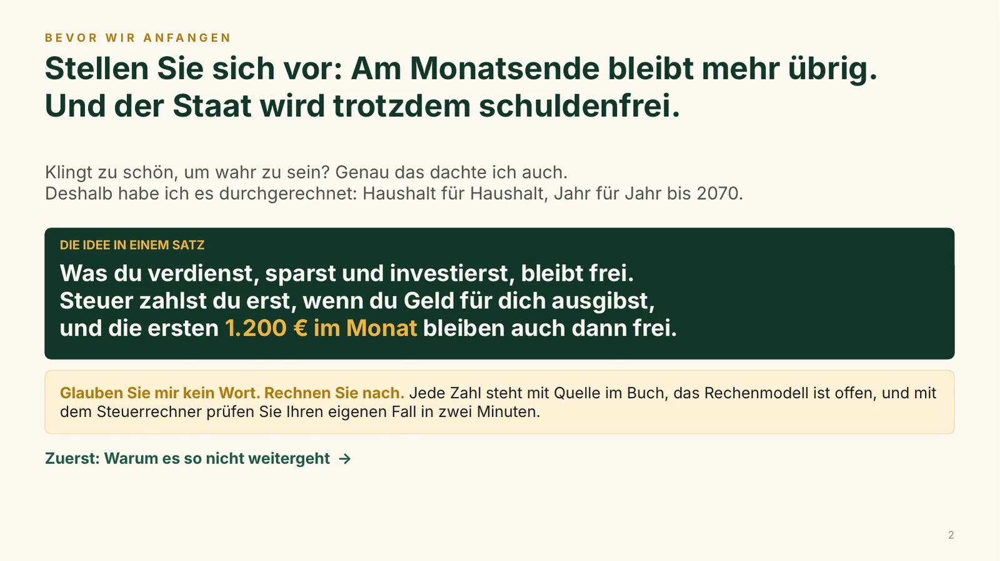
B E V O R W I R A N FA N G E N Stellen Sie sich vor: Am Monatsende bleibt mehr übrig. Und der Staat wird trotzdem schuldenfrei. Klingt zu schön, um wahr zu sein? Genau das dachte ich auch. Deshalb habe ich es durchgerechnet: Haushalt für Haushalt, Jahr für Jahr bis 2070. DIE IDEE IN EINEM SATZ Was du verdienst, sparst und investierst, bleibt frei. Steuer zahlst du erst, wenn du Geld für dich ausgibst, und die ersten 1.200 € im Monat bleiben auch dann frei. Glauben Sie mir kein Wort. Rechnen Sie nach. Jede Zahl steht mit Quelle im Buch, das Rechenmodell ist offen, und mit dem Steuerrechner prüfen Sie Ihren eigenen Fall in zwei Minuten. Zuerst: Warum es so nicht weitergeht → 2
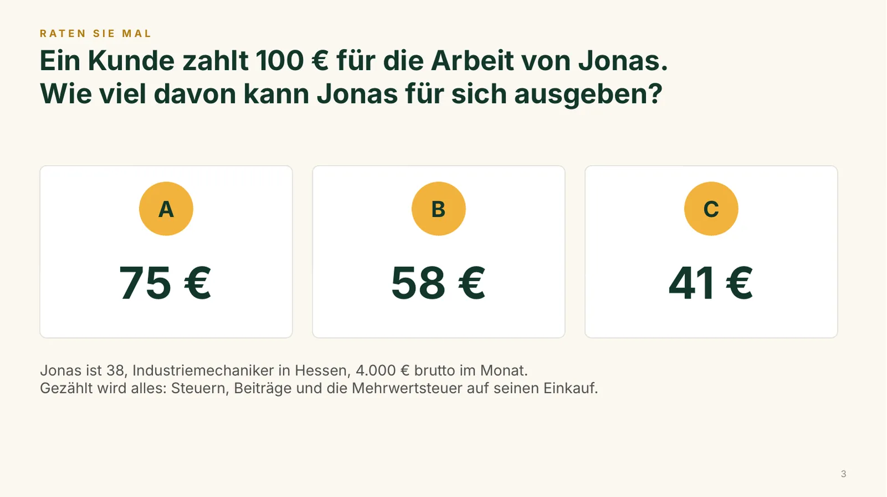
R AT E N S I E M A L Ein Kunde zahlt 100 € für die Arbeit von Jonas. Wie viel davon kann Jonas für sich ausgeben? A B C 75 € 58 € 41 € Jonas ist 38, Industriemechaniker in Hessen, 4.000 € brutto im Monat. Gezählt wird alles: Steuern, Beiträge und die Mehrwertsteuer auf seinen Einkauf. 3
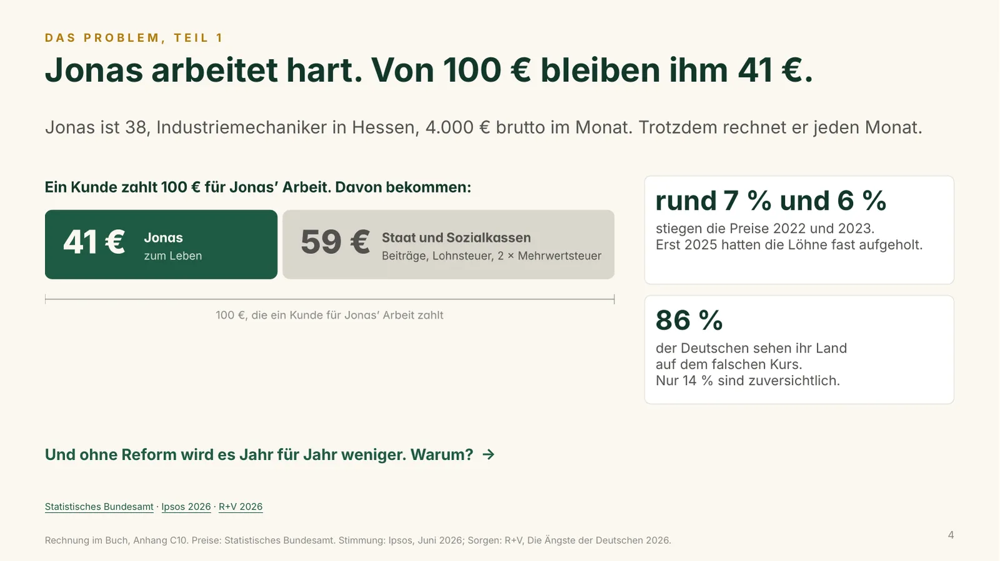
DAS PROBLEM, TEIL 1 Jonas arbeitet hart. Von 100 € bleiben ihm 41 €. Jonas ist 38, Industriemechaniker in Hessen, 4.000 € brutto im Monat. Trotzdem rechnet er jeden Monat. rund 7 % und 6 % stiegen die Preise 2022 und 2023. Erst 2025 hatten die Löhne fast aufgeholt. 86 % der Deutschen sehen ihr Land auf dem falschen Kurs. Nur 14 % sind zuversichtlich. Und ohne Reform wird es Jahr für Jahr weniger. Warum? → Statistisches Bundesamt · Ipsos 2026 · R+V 2026 4 Rechnung im Buch, Anhang C10. Preise: Statistisches Bundesamt. Stimmung: Ipsos, Juni 2026; Sorgen: R+V, Die Ängste der Deutschen 2026.
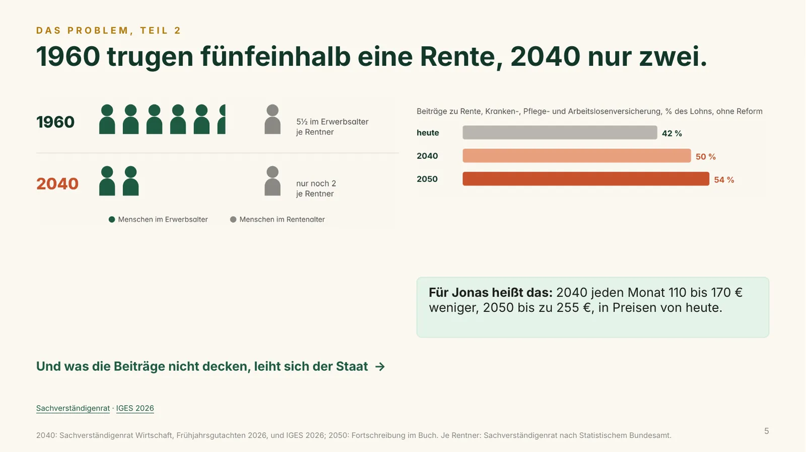
DAS PROBLEM, TEIL 2 1960 trugen fünfeinhalb eine Rente, 2040 nur zwei. Für Jonas heißt das: 2040 jeden Monat 110 bis 170 € weniger, 2050 bis zu 255 €, in Preisen von heute. Und was die Beiträge nicht decken, leiht sich der Staat → Sachverständigenrat · IGES 2026 5 2040: Sachverständigenrat Wirtschaft, Frühjahrsgutachten 2026, und IGES 2026; 2050: Fortschreibung im Buch. Je Rentner: Sachverständigenrat nach Statistischem Bundesamt.
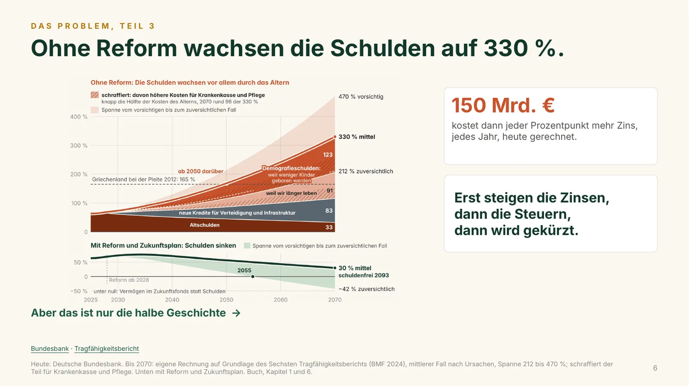
DAS PROBLEM, TEIL 3 Ohne Reform wachsen die Schulden auf 330 %. 150 Mrd. € kostet dann jeder Prozentpunkt mehr Zins, jedes Jahr, heute gerechnet. Erst steigen die Zinsen, dann die Steuern, dann wird gekürzt. Aber das ist nur die halbe Geschichte → Bundesbank · Tragfähigkeitsbericht Heute: Deutsche Bundesbank. Bis 2070: eigene Rechnung auf Grundlage des Sechsten Tragfähigkeitsberichts (BMF 2024), mittlerer Fall nach Ursachen, Spanne 212 bis 470 %; schraffiert der 6 Teil für Krankenkasse und Pflege. Unten mit Reform und Zukunftsplan. Buch, Kapitel 1 und 6.
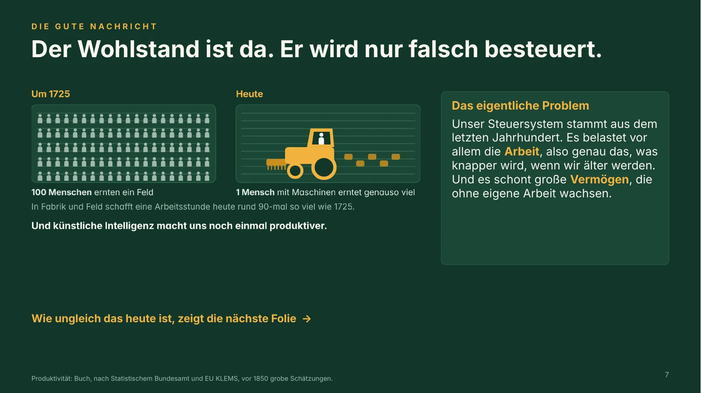
DIE GUTE NACHRICHT Der Wohlstand ist da. Er wird nur falsch besteuert. Das eigentliche Problem Unser Steuersystem stammt aus dem letzten Jahrhundert. Es belastet vor allem die Arbeit, also genau das, was knapper wird, wenn wir älter werden. Und es schont große Vermögen, die ohne eigene Arbeit wachsen. Wie ungleich das heute ist, zeigt die nächste Folie → 7 Produktivität: Buch, nach Statistischem Bundesamt und EU KLEMS, vor 1850 grobe Schätzungen.
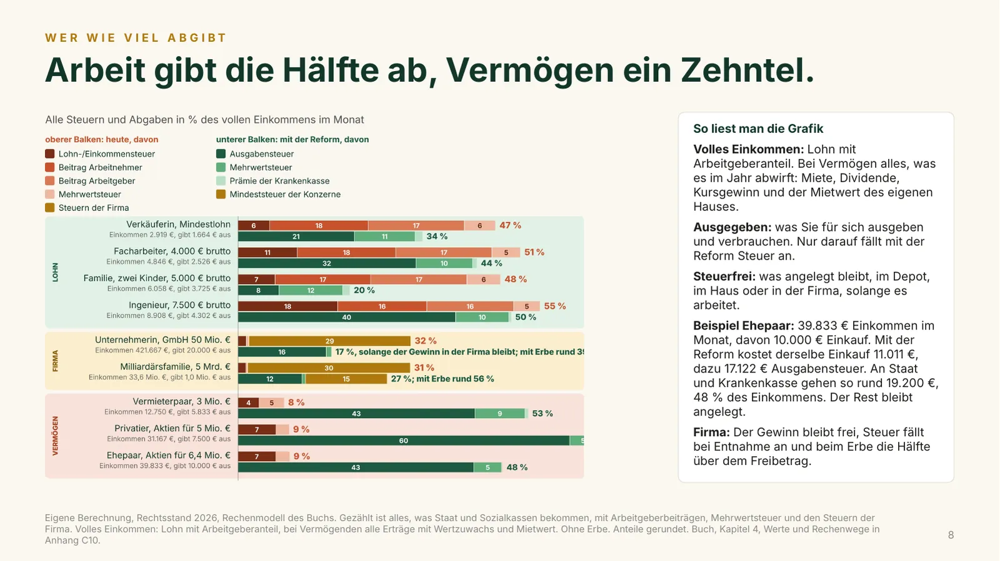
WE R W IE V I EL A B G I BT Arbeit gibt die Hälfte ab, Vermögen ein Zehntel. So liest man die Grafik Volles Einkommen: Lohn mit Arbeitgeberanteil. Bei Vermögen alles, was es im Jahr abwirft: Miete, Dividende, Kursgewinn und der Mietwert des eigenen Hauses. Ausgegeben: was Sie für sich ausgeben und verbrauchen. Nur darauf fällt mit der Reform Steuer an. Steuerfrei: was angelegt bleibt, im Depot, im Haus oder in der Firma, solange es arbeitet. Beispiel Ehepaar: 39.833 € Einkommen im Monat, davon 10.000 € Einkauf. Mit der Reform kostet derselbe Einkauf 11.011 €, dazu 14.622 € Ausgabensteuer. An Staat und Krankenkasse gehen so rund 16.700 €, 42 % des Einkommens. Der Rest bleibt angelegt. Firma: Der Gewinn bleibt frei, Steuer fällt bei Entnahme an und beim Erbe die Hälfte über dem Freibetrag. Eigene Berechnung, Rechtsstand 2026, Rechenmodell des Buchs. Gezählt ist alles, was Staat und Sozialkassen bekommen, mit Arbeitgeberbeiträgen, Mehrwertsteuer und den Steuern der Firma. Volles Einkommen: Lohn mit Arbeitgeberanteil, bei Vermögenden alle Erträge mit Wertzuwachs und Mietwert. Ohne Erbe. Anteile gerundet. Buch, Kapitel 4, Werte und Rechenwege in 8 Anhang C10.
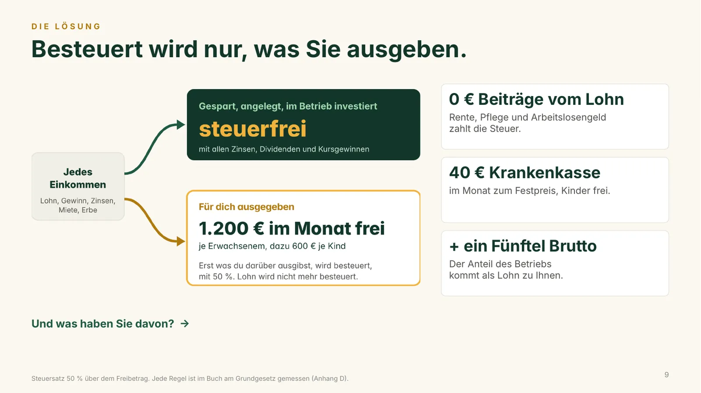
DIE LÖSUNG Besteuert wird nur, was Sie ausgeben. 0 € Beiträge vom Lohn Rente, Pflege und Arbeitslosengeld zahlt die Steuer. 40 € Krankenkasse im Monat zum Festpreis, Kinder frei. + ein Fünftel Brutto Der Anteil des Betriebs kommt als Lohn zu Ihnen. Und was haben Sie davon? → 9 Steuersatz 50 % über dem Freibetrag. Jede Regel ist im Buch am Grundgesetz gemessen (Anhang D).
WA S S I E DAVO N H A B E N Sechs Vorteile auf einen Blick. Mehr Geld im Monat Keine Beiträge vom Billigerer Alltag Zum Start 69 von 100 Menschen Lohn Lebensmittel und Medizin mehr als ohne Reform, ohne Mehrwertsteuer Der Anteil des Betriebs gegen heute 63 kommt als Lohn zu Ihnen Arbeit lohnt sich Sparen ohne Steuer Steuern sinken ab 2038 ab der ersten Stunde, Vermögen aufbauen für alle, und der Staat ist im auch aus der Grundsicherung wird für jeden möglich mittleren Fall 2099 schuldenfrei Was heißt das in Euro? Für Ihren Haushalt? → 10
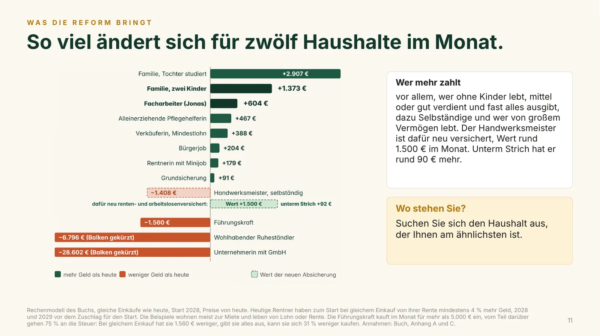
WA S D I E R E F O R M B R I N GT So viel ändert sich für zwölf Haushalte im Monat. Wer mehr zahlt vor allem, wer ohne Kinder lebt, mittel oder gut verdient und fast alles ausgibt, dazu Selbständige und wer von großem Vermögen lebt. Der Handwerksmeister ist dafür neu versichert, Wert rund 1.500 € im Monat. Unterm Strich hat er rund 90 € mehr. Wo stehen Sie? Suchen Sie sich den Haushalt aus, der Ihnen am ähnlichsten ist. Rechenmodell des Buchs, gleiche Einkäufe wie heute, Start 2028, Preise von heute. Heutige Rentner haben zum Start bei gleichem Einkauf von ihrer Rente mindestens 4 % mehr Geld, 2028 und 2029 vor dem Zuschlag für den Start. Die Beispiele wohnen meist zur Miete und leben von Lohn oder Rente. Die Führungskraft hat bei gleichem Einkauf mehr Geld, kann sich aber 24 % 11 weniger kaufen, wenn sie alles ausgibt. Annahmen: Buch, Anhang A und C.
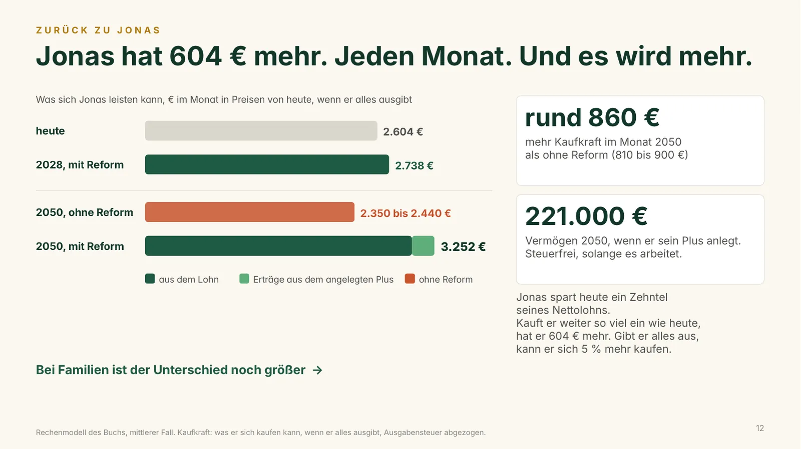
ZURÜCK ZU JONAS Jonas hat 604 € mehr. Jeden Monat. Und es wird mehr. rund 830 € mehr Kaufkraft im Monat 2050 als ohne Reform (790 bis 880 €) 221.000 € Vermögen 2050, wenn er sein Plus anlegt. Steuerfrei, solange es arbeitet. Jonas spart heute ein Zehntel seines Nettolohns. Kauft er weiter so viel ein wie heute, hat er 604 € mehr. Gibt er alles aus, kann er sich 5 % mehr kaufen. Bei Familien ist der Unterschied noch größer → 12 Rechenmodell des Buchs, mittlerer Fall. Kaufkraft: was er sich kaufen kann, wenn er alles ausgibt, Ausgabensteuer abgezogen.
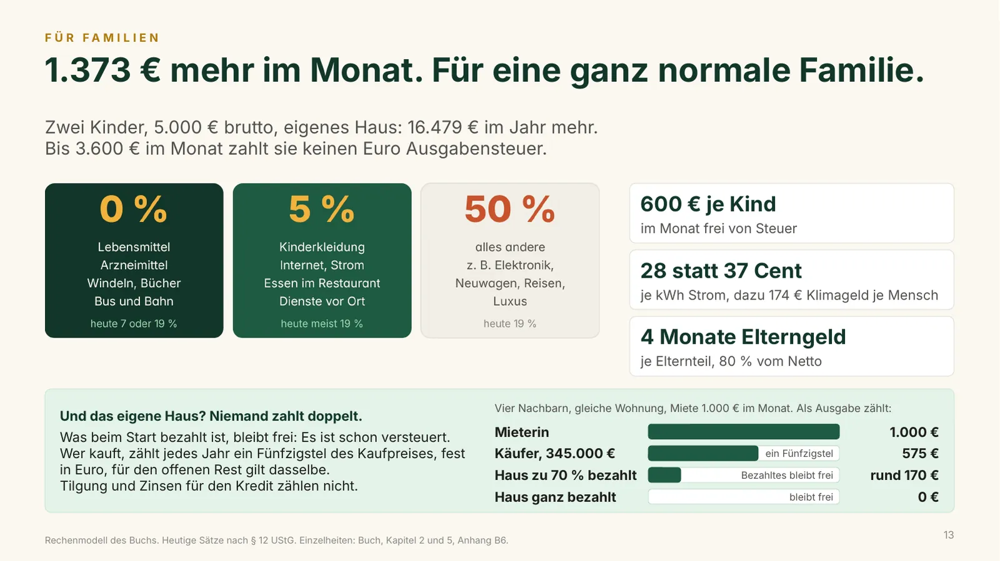
F Ü R FA M I L I E N 1.373 € mehr im Monat. Für eine ganz normale Familie. Zwei Kinder, 5.000 € brutto, eigenes Haus: 16.479 € im Jahr mehr. Bis 3.600 € im Monat zahlt sie keinen Euro Ausgabensteuer. 600 € je Kind im Monat frei von Steuer 28 statt 37 Cent je kWh Strom, dazu 174 € Klimageld je Mensch 4 Monate Elterngeld je Elternteil, 80 % vom Netto Vier Nachbarn, gleiche Wohnung, Miete 1.000 € im Monat. Als Ausgabe zählt: Und das eigene Haus? Niemand zahlt doppelt. Was beim Start bezahlt ist, bleibt frei: Es ist schon versteuert. Mieterin 1.000 € Wer kauft, zählt jedes Jahr ein Fünfzigstel des Kaufpreises, fest Käufer, 345.000 € ein Fünfzigstel 575 € in Euro, für den offenen Rest gilt dasselbe. Haus zu 70 % bezahlt Bezahltes bleibt frei rund 170 € Tilgung und Zinsen für den Kredit zählen nicht. Haus ganz bezahlt bleibt frei 0€ 13 Rechenmodell des Buchs. Heutige Sätze nach § 12 UStG. Einzelheiten: Buch, Kapitel 2 und 5, Anhang B6.
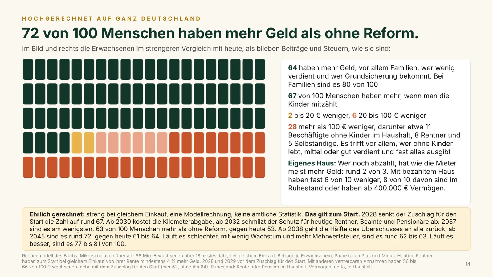
HOCHGERECHNET AUF GANZ DEUTSCHLAND 69 von 100 Menschen haben mehr Geld als ohne Reform. Im Bild und rechts die Erwachsenen im strengeren Vergleich mit heute, als blieben Beiträge und Steuern, wie sie sind: 59 haben mehr Geld, vor allem Familien, wer wenig verdient und wer Grundsicherung bekommt. Bei Familien sind es 78 von 100 63 von 100 Menschen haben mehr, wenn man die Kinder mitzählt 3 bis 20 € weniger, 8 20 bis 100 € weniger 30 mehr als 100 € weniger, darunter etwa 13 Beschäftigte ohne Kinder im Haushalt, 8 Rentner und 5 Selbständige. Es trifft vor allem, wer ohne Kinder lebt, mittel oder gut verdient und fast alles ausgibt Eigenes Haus: Wer noch abzahlt, hat wie die Mieter meist mehr Geld: rund 6 von 10. Mit bezahltem Haus haben 6 von 10 weniger, 8 von 10 davon sind im Ruhestand oder haben ab 400.000 € Vermögen. Ehrlich gerechnet: streng bei gleichem Einkauf, eine Modellrechnung, keine amtliche Statistik. Das gilt zum Start. 2028 senkt der Zuschlag für den Start die Zahl auf rund 64. Ab 2030 kostet die Kilometerabgabe, ab 2032 schmilzt der Schutz für heutige Rentner, Beamte und Pensionäre ab: 2034 sind es am wenigsten, 65 von 100 Menschen mehr als ohne Reform, gegen heute 53. Ab 2038 geht die Hälfte des Überschusses an alle zurück, ab 2045 sind es rund 75, gegen heute 64 bis 65. Läuft es schlechter, mit wenig Wachstum und mehr Mehrwertsteuer, sind es rund 64 bis 67. Läuft es besser, sind es 80 bis 83 von 100. Rechenmodell des Buchs, Mikrosimulation über alle 68 Mio. Erwachsenen über 18, erstes Jahr, bei gleichem Einkauf. Beträge je Erwachsenem, Paare teilen Plus und Minus. Heutige Rentner haben zum Start bei gleichem Einkauf von ihrer Rente mindestens 4 % mehr Geld, 2028 und 2029 vor dem Zuschlag für den Start. Mit anderen vertretbaren Annahmen haben 52 bis 14 61 von 100 Erwachsenen mehr, mit dem Zuschlag für den Start (hier 57, ohne ihn 59). Ruhestand: Rente oder Pension im Haushalt. Vermögen: netto, je Haushalt.
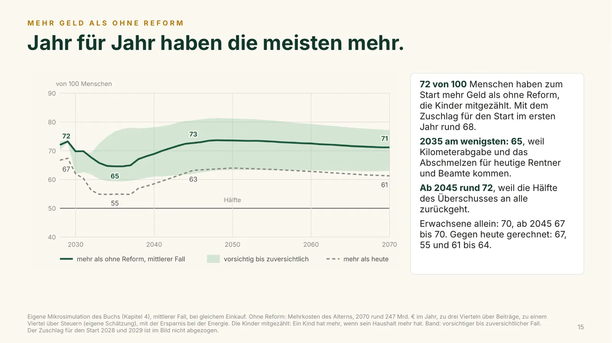
MEHR GELD ALS OHNE REFORM Jahr für Jahr haben die meisten mehr. 69 von 100 Menschen haben zum Start mehr Geld als ohne Reform, die Kinder mitgezählt. Mit dem Zuschlag für den Start im ersten Jahr rund 64. 2034 am wenigsten: 65, weil Kilometerabgabe und das Abschmelzen für heutige Rentner und Beamte kommen. Ab 2045 rund 75, weil die Hälfte des Überschusses an alle zurückgeht. Erwachsene allein: 66, ab 2045 72 bis 73. Gegen heute gerechnet: 63, 53 und 64 bis 65. Eigene Mikrosimulation des Buchs (Kapitel 4), mittlerer Fall, bei gleichem Einkauf. Ohne Reform: Mehrkosten des Alterns, 2070 rund 247 Mrd. € im Jahr, zu drei Vierteln über Beiträge, zu einem Viertel über Steuern (eigene Schätzung), mit der Ersparnis bei der Energie. Die Kinder mitgezählt: Ein Kind hat mehr, wenn sein Haushalt mehr hat. Band: vorsichtiger bis zuversichtlicher Fall. 15 Der Zuschlag für den Start 2028 und 2029 ist im Bild nicht abgezogen.
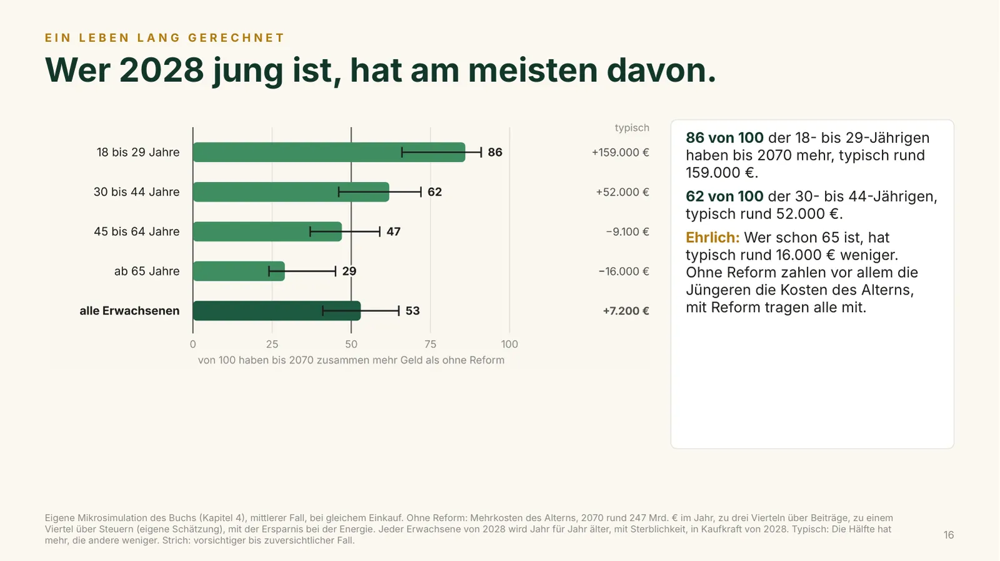
EIN LEBEN LANG GERECHNET Wer 2028 jung ist, hat am meisten davon. 86 von 100 der 18- bis 29-Jährigen haben bis 2070 mehr, typisch rund 159.000 €. 62 von 100 der 30- bis 44-Jährigen, typisch rund 52.000 €. Ehrlich: Wer schon 65 ist, hat typisch rund 16.000 € weniger. Ohne Reform zahlen vor allem die Jüngeren die Kosten des Alterns, mit Reform tragen alle mit. Eigene Mikrosimulation des Buchs (Kapitel 4), mittlerer Fall, bei gleichem Einkauf. Ohne Reform: Mehrkosten des Alterns, 2070 rund 247 Mrd. € im Jahr, zu drei Vierteln über Beiträge, zu einem Viertel über Steuern (eigene Schätzung), mit der Ersparnis bei der Energie. Jeder Erwachsene von 2028 wird Jahr für Jahr älter, mit Sterblichkeit, in Kaufkraft von 2028. Typisch: Die Hälfte hat 16 mehr, die andere weniger. Strich: vorsichtiger bis zuversichtlicher Fall.
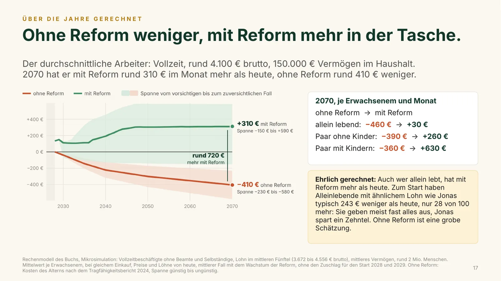
ÜBER DIE JAHRE GERECHNET Ohne Reform weniger, mit Reform mehr in der Tasche. Der durchschnittliche Arbeiter: Vollzeit, rund 4.100 € brutto, 150.000 € Vermögen im Haushalt. 2070 hat er mit Reform rund 250 € im Monat mehr als heute, ohne Reform rund 410 € weniger. 2070, je Erwachsenem und Monat ohne Reform → mit Reform allein lebend: −460 € → −60 € Paar ohne Kinder: −390 € → +210 € Paar mit Kindern: −360 € → +570 € Ehrlich gerechnet: Wer allein lebt, hat im Schnitt auch mit Reform weniger als heute, aber deutlich mehr als ohne Reform. Zum Start haben Alleinlebende mit ähnlichem Lohn wie Jonas typisch 243 € weniger als heute, nur 28 von 100 mehr: Sie geben meist fast alles aus, Jonas spart ein Zehntel. Ohne Reform ist eine grobe Schätzung. Rechenmodell des Buchs, Mikrosimulation: Vollzeitbeschäftigte ohne Beamte und Selbständige, Lohn im mittleren Fünftel (3.672 bis 4.556 € brutto), mittleres Vermögen, rund 2 Mio. Menschen. Mittelwert je Erwachsenem, bei gleichem Einkauf, Preise und Löhne von heute, mittlerer Fall mit dem Wachstum der Reform, ohne den Zuschlag für den Start 2028 und 2029. Ohne Reform: 17 Kosten des Alterns nach dem Tragfähigkeitsbericht 2024, Spanne günstig bis ungünstig.
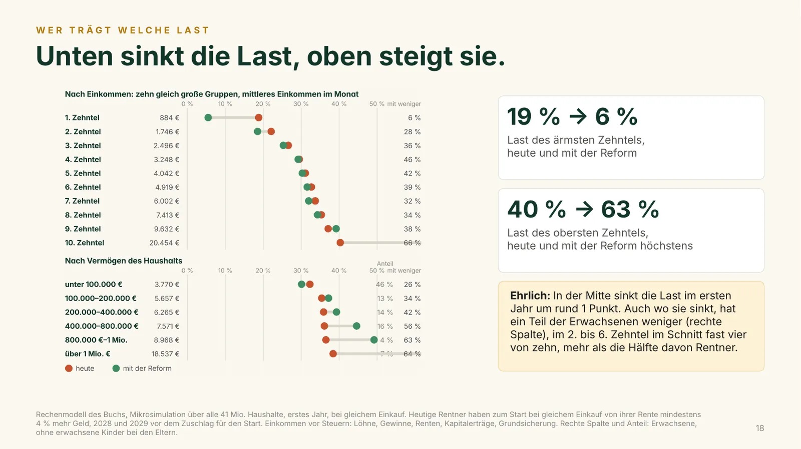
WER TRÄGT WELCHE LAST Unten sinkt die Last, oben steigt sie. 19 % → 6 % Last des ärmsten Zehntels, heute und mit der Reform 40 % → 54 % Last des obersten Zehntels, sie steigt deutlich Ehrlich: In der Mitte steigt die Last im ersten Jahr um rund 1 Punkt. Auch wo sie sinkt, hat ein Teil der Erwachsenen weniger (rechte Spalte), im 2. bis 6. Zehntel je nach Zehntel 28 bis 49 von 100, mehr als die Hälfte davon Rentner. Rechenmodell des Buchs, Mikrosimulation über alle 41 Mio. Haushalte, erstes Jahr, bei gleichem Einkauf. Heutige Rentner haben zum Start bei gleichem Einkauf von ihrer Rente mindestens 4 % mehr Geld, 2028 und 2029 vor dem Zuschlag für den Start. Einkommen vor Steuern: Löhne, Gewinne, Renten, Kapitalerträge, Grundsicherung. Rechte Spalte und Anteil: Erwachsene, 18 ohne erwachsene Kinder bei den Eltern.
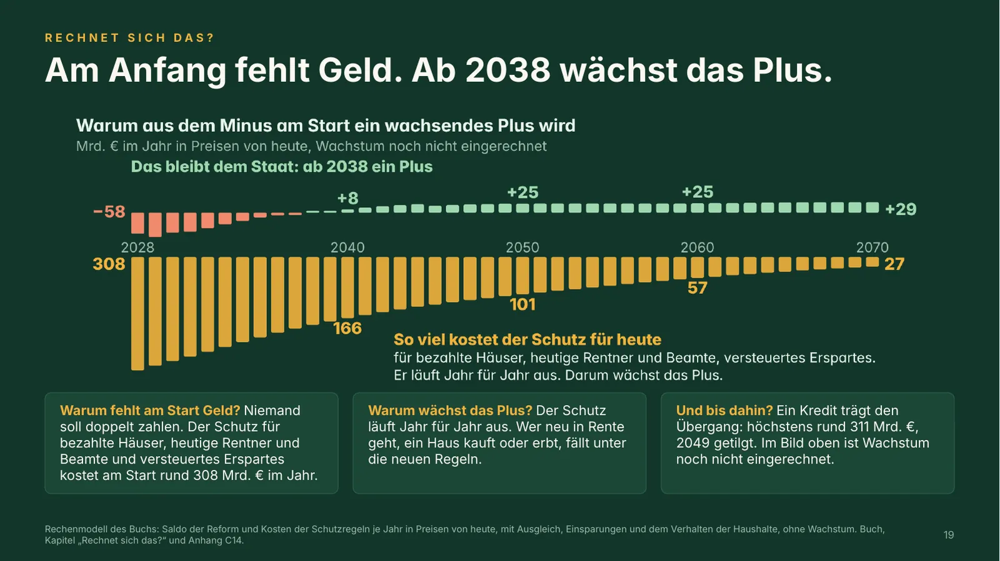
RECHNET SICH DAS? Am Anfang fehlt Geld. Ab 2038 wächst das Plus. Warum fehlt am Start Geld? Niemand Warum wächst das Plus? Der Schutz Und bis dahin? Ein Kredit trägt den soll doppelt zahlen. Der Schutz für läuft Jahr für Jahr aus. Wer neu in Rente Übergang: höchstens rund 314 Mrd. €, bezahlte Häuser, heutige Rentner und geht, ein Haus kauft oder erbt, fällt unter 2049 getilgt. Im Bild oben ist Wachstum Beamte und versteuertes Erspartes die neuen Regeln. noch nicht eingerechnet. kostet am Start rund 308 Mrd. € im Jahr. Rechenmodell des Buchs: Saldo der Reform und Kosten der Schutzregeln je Jahr in Preisen von heute, mit Ausgleich, Einsparungen und dem Verhalten der Haushalte, ohne Wachstum. Buch, 19 Kapitel „Rechnet sich das?“ und Anhang C14.
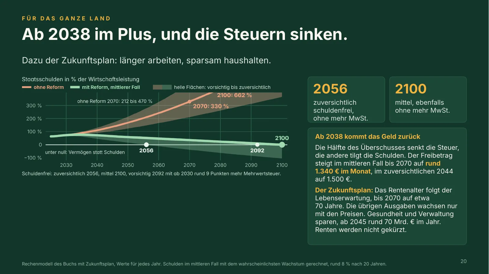
FÜR DAS GANZE LAND Ab 2038 im Plus, und die Steuern sinken. Dazu der Zukunftsplan: länger arbeiten, sparsam haushalten. 2056 2099 zuversichtlich mittel, ebenfalls schuldenfrei, ohne mehr MwSt. ohne mehr MwSt. Ab 2038 kommt das Geld zurück Die Hälfte des Überschusses senkt die Steuer, die andere tilgt die Schulden. Der Freibetrag steigt im mittleren Fall bis 2070 auf rund 1.340 € im Monat, im zuversichtlichen 2044 auf 1.500 €. Der Zukunftsplan: Das Rentenalter folgt der Lebenserwartung, bis 2070 auf etwa 70 Jahre. Die übrigen Ausgaben wachsen nur mit den Preisen. Gesundheit und Verwaltung sparen, ab 2045 rund 70 Mrd. € im Jahr. Renten werden nicht gekürzt. 20 Rechenmodell des Buchs mit Zukunftsplan, Werte für jedes Jahr. Schulden im mittleren Fall mit dem wahrscheinlichsten Wachstum gerechnet, rund 8 % nach 20 Jahren.
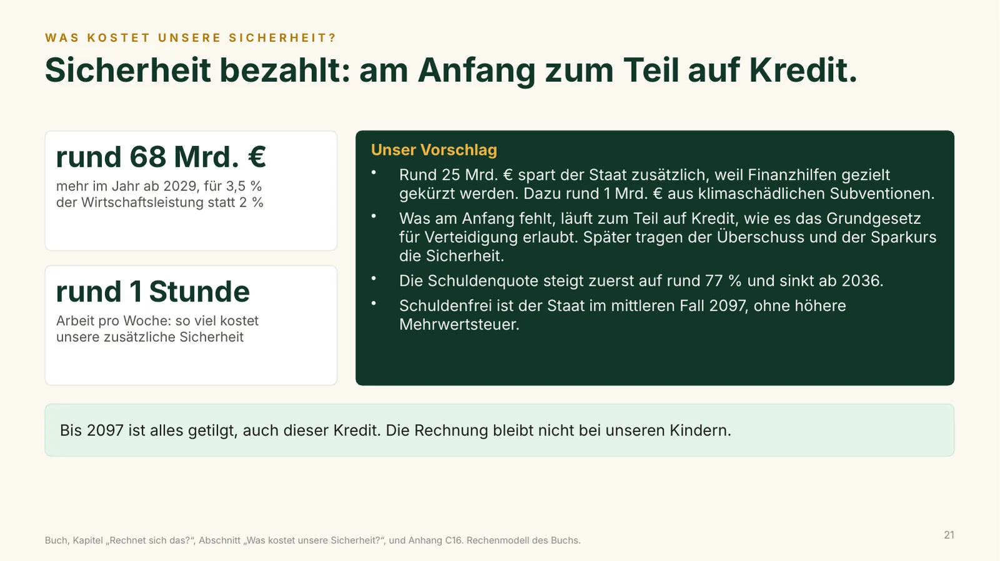
WA S KO S T E T U N S E R E S I C H E R H E I T ? Sicherheit bezahlt: am Anfang zum Teil auf Kredit. rund 68 Mrd. € Unser Vorschlag • Rund 25 Mrd. € spart der Staat zusätzlich, weil Finanzhilfen gezielt mehr im Jahr ab 2029, für 3,5 % gekürzt werden. Dazu rund 1 Mrd. € aus klimaschädlichen Subventionen. der Wirtschaftsleistung statt 2 % • Was am Anfang fehlt, läuft zum Teil auf Kredit, wie es das Grundgesetz für Verteidigung erlaubt. Später tragen der Überschuss und der Sparkurs die Sicherheit. • Die Schuldenquote steigt zuerst auf knapp 77 % und sinkt ab 2036. rund 1 Stunde • Schuldenfrei ist der Staat im mittleren Fall 2099, ohne höhere Arbeit pro Woche: so viel kostet Mehrwertsteuer. unsere zusätzliche Sicherheit Bis 2099 ist alles getilgt, auch dieser Kredit. Die Rechnung bleibt nicht bei unseren Kindern. 21 Buch, Kapitel „Rechnet sich das?“, Abschnitt „Was kostet unsere Sicherheit?“, und Anhang C16. Rechenmodell des Buchs.
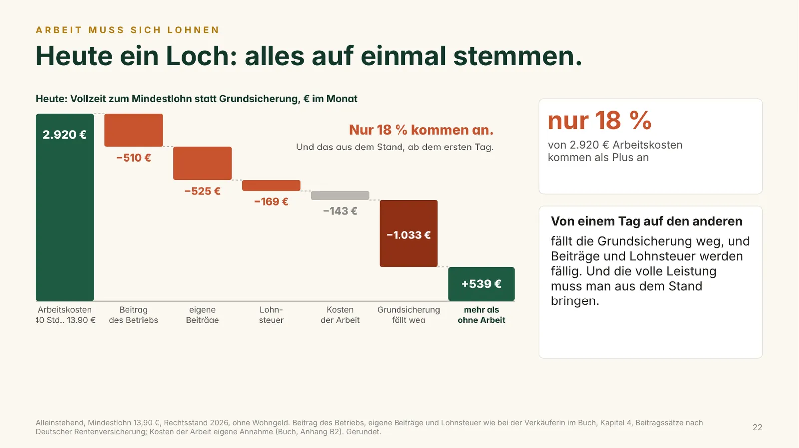
ARBEIT MUSS SICH LOHNEN Heute ein Loch: alles auf einmal stemmen. nur 18 % von 2.920 € Arbeitskosten kommen als Plus an Von einem Tag auf den anderen fällt die Grundsicherung weg, und Beiträge und Lohnsteuer werden fällig. Und die volle Leistung muss man aus dem Stand bringen. Alleinstehend, Mindestlohn 13,90 €, Rechtsstand 2026, ohne Wohngeld. Beitrag des Betriebs, eigene Beiträge und Lohnsteuer wie bei der Verkäuferin im Buch, Kapitel 4, Beitragssätze nach 22 Deutscher Rentenversicherung; Kosten der Arbeit eigene Annahme (Buch, Anhang B2). Gerundet.
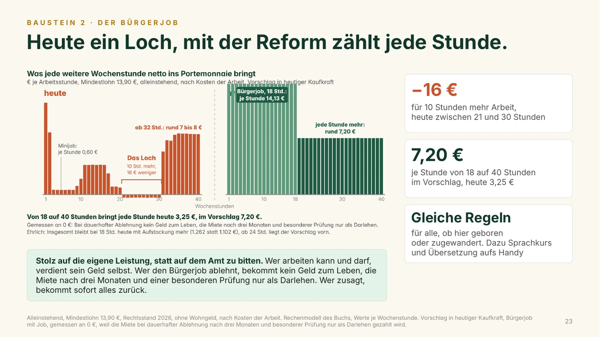
BAUSTEIN 2 · DER BÜRGERJOB Heute ein Loch, mit der Reform zählt jede Stunde. −16 € für 10 Stunden mehr Arbeit, heute zwischen 21 und 30 Stunden 7,20 € je Stunde von 18 auf 40 Stunden im Vorschlag, heute 3,25 € Gleiche Regeln für alle, ob hier geboren oder zugewandert. Dazu Sprachkurs und Übersetzung aufs Handy Stolz auf die eigene Leistung, statt auf dem Amt zu bitten. Wer arbeiten kann und darf, verdient sein Geld selbst. Wer den Bürgerjob ablehnt, bekommt kein Geld zum Leben, die Miete nach drei Monaten und einer besonderen Prüfung nur als Darlehen. Wer zusagt, bekommt sofort alles zurück. Alleinstehend, Mindestlohn 13,90 €, Rechtsstand 2026, ohne Wohngeld, nach Kosten der Arbeit. Rechenmodell des Buchs, Werte je Wochenstunde. Vorschlag in heutiger Kaufkraft, Bürgerjob 23 mit Job, gemessen an 0 €, weil die Miete bei dauerhafter Ablehnung nach drei Monaten und besonderer Prüfung nur als Darlehen gezahlt wird.
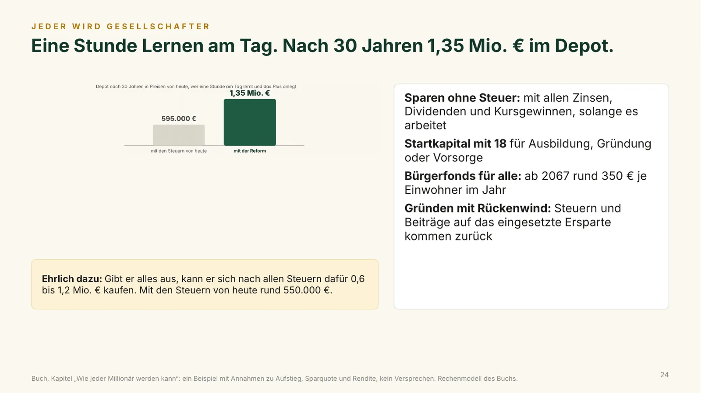
JEDER WIRD GESELLSCHAFTER Eine Stunde Lernen am Tag. Nach 30 Jahren 1,35 Mio. € im Depot. Sparen ohne Steuer: mit allen Zinsen, Dividenden und Kursgewinnen, solange es arbeitet Startkapital mit 18 für Ausbildung, Gründung oder Vorsorge Bürgerfonds für alle: ab 2067 rund 350 € je Einwohner im Jahr Gründen mit Rückenwind: Steuern und Beiträge auf das eingesetzte Ersparte kommen zurück Ehrlich dazu: Gibt er alles aus, kann er sich nach allen Steuern dafür 0,6 bis 1,2 Mio. € kaufen. Mit den Steuern von heute rund 550.000 €. 24 Buch, Kapitel „Wie jeder Millionär werden kann“: ein Beispiel mit Annahmen zu Aufstieg, Sparquote und Rendite, kein Versprechen. Rechenmodell des Buchs.
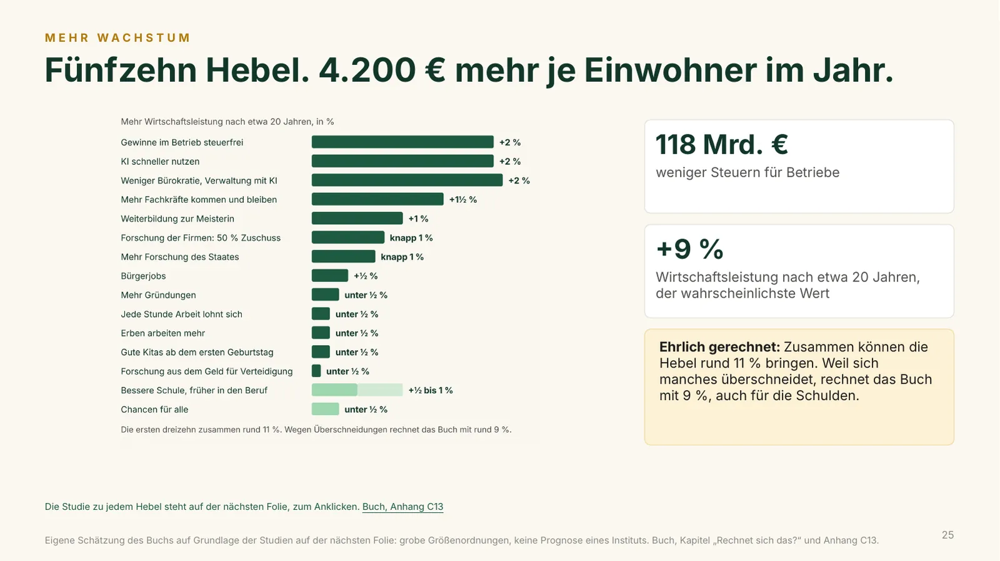
ME H R WAC HS T U M Fünfzehn Hebel. 4.200 € mehr je Einwohner im Jahr. 118 Mrd. € weniger Steuern für Betriebe +8 % Wirtschaftsleistung nach etwa 20 Jahren, der wahrscheinlichste Wert Ehrlich gerechnet: Zusammen können die Hebel rund 10 % bringen. Weil sich manches überschneidet, rechnet das Buch mit 8 %, auch für die Schulden. Die Studie zu jedem Hebel steht auf der nächsten Folie, zum Anklicken. Buch, Anhang C13 25 Eigene Schätzung des Buchs auf Grundlage der Studien auf der nächsten Folie: grobe Größenordnungen, keine Prognose eines Instituts. Buch, Kapitel „Rechnet sich das?“ und Anhang C13.
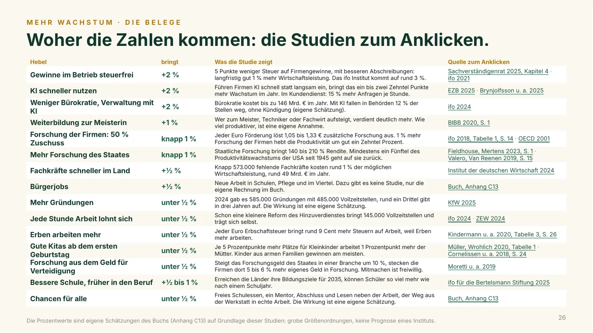
ME H R WAC HS T U M · D I E B E L E G E Woher die Zahlen kommen: die Studien zum Anklicken. Hebel bringt Was die Studie zeigt Quelle zum Anklicken 5 Punkte weniger Steuer auf Firmengewinne, mit besseren Abschreibungen: Sachverständigenrat 2025, Kapitel 4 · Gewinne im Betrieb steuerfrei +2 % langfristig gut 1 % mehr Wirtschaftsleistung. Das ifo Institut kommt auf rund 3 %. ifo 2021 Führen Firmen KI schnell statt langsam ein, bringt das ein bis zwei Zehntel Punkte KI schneller nutzen +2 % mehr Wachstum im Jahr. Im Kundendienst: 15 % mehr Anfragen je Stunde. EZB 2025 · Brynjolfsson u. a. 2025 Weniger Bürokratie, Verwaltung mit Bürokratie kostet bis zu 146 Mrd. € im Jahr. Mit KI fallen in Behörden 12 % der +2 % Stellen weg, ohne Kündigung (eigene Schätzung). ifo 2024 KI Wer zum Meister, Techniker oder Fachwirt aufsteigt, verdient deutlich mehr. Wie Weiterbildung zur Meisterin +1 % viel produktiver, ist eine eigene Annahme. BIBB 2020, S. 1 Forschung der Firmen: 50 % Jeder Euro Förderung löst 1,05 bis 1,33 € zusätzliche Forschung aus. 1 % mehr knapp 1 % Forschung der Firmen hebt die Produktivität um gut ein Zehntel Prozent. ifo 2018, Tabelle 1, S. 14 · OECD 2001 Zuschuss Staatliche Forschung bringt 140 bis 210 % Rendite. Mindestens ein Fünftel des Fieldhouse, Mertens 2023, S. 1 · Mehr Forschung des Staates knapp 1 % Produktivitätswachstums der USA seit 1945 geht auf sie zurück. Valero, Van Reenen 2019, S. 15 Knapp 573.000 fehlende Fachkräfte kosten rund 1 % der möglichen Fachkräfte schneller im Land +½ % Wirtschaftsleistung, rund 49 Mrd. € im Jahr. Institut der deutschen Wirtschaft 2024 Neue Arbeit in Schulen, Pflege und im Viertel. Dazu gibt es keine Studie, nur die Bürgerjobs +½ % eigene Rechnung im Buch. Buch, Anhang C13 2024 gab es 585.000 Gründungen mit 485.000 Vollzeitstellen, rund ein Drittel gibt Mehr Gründungen unter ½ % in drei Jahren auf. Die Wirkung ist eine eigene Schätzung. KfW 2025 Schon eine kleinere Reform des Hinzuverdienstes bringt 145.000 Vollzeitstellen und Jede Stunde Arbeit lohnt sich unter ½ % trägt sich selbst. ifo 2024 · ZEW 2024 Jeder Euro Erbschaftsteuer bringt rund 9 Cent mehr Steuern auf Arbeit, weil Erben Erben arbeiten mehr unter ½ % mehr arbeiten. Kindermann u. a. 2020, Tabelle 3, S. 26 Gute Kitas ab dem ersten Je 5 Prozentpunkte mehr Plätze für Kleinkinder arbeitet 1 Prozentpunkt mehr der Müller, Wrohlich 2020, Tabelle 1 · unter ½ % Mütter. Kinder aus armen Familien gewinnen am meisten. Cornelissen u. a. 2018, S. 24 Geburtstag Forschung aus dem Geld für Steigt das Forschungsgeld des Staates in einer Branche um 10 %, stecken die unter ½ % Firmen dort 5 bis 6 % mehr eigenes Geld in Forschung. Mitmachen ist freiwillig. Moretti u. a. 2019 Verteidigung Erreichen die Länder ihre Bildungsziele für 2035, können Schüler so viel mehr wie Bessere Schule, früher in den Beruf +½ bis 1 % nach einem Schuljahr. ifo für die Bertelsmann Stiftung 2025 Freies Schulessen, ein Mentor, Abschluss und Lesen neben der Arbeit, der Weg aus Chancen für alle unter ½ % der Werkstatt in echte Arbeit. Die Wirkung ist eine eigene Schätzung. Buch, Anhang C13 26 Die Prozentwerte sind eigene Schätzungen des Buchs (Anhang C13) auf Grundlage dieser Studien: grobe Größenordnungen, keine Prognose eines Instituts.
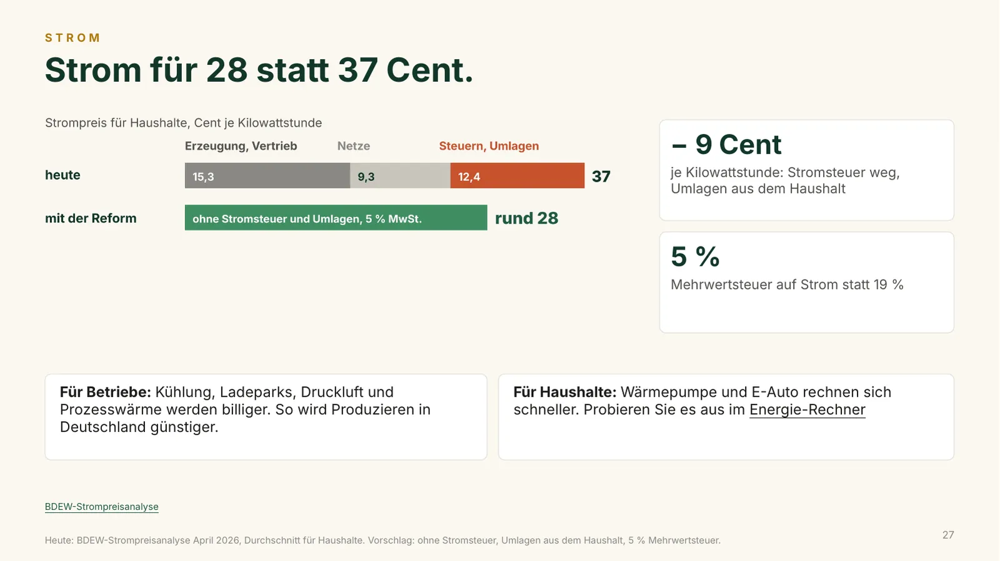
STROM Strom für 28 statt 37 Cent. − 9 Cent je Kilowattstunde: Stromsteuer weg, Umlagen aus dem Haushalt 5% Mehrwertsteuer auf Strom statt 19 % Für Betriebe: Kühlung, Ladeparks, Druckluft und Für Haushalte: Wärmepumpe und E-Auto rechnen sich Prozesswärme werden billiger. So wird Produzieren in schneller. Probieren Sie es aus im Energie-Rechner Deutschland günstiger. BDEW-Strompreisanalyse 27 Heute: BDEW-Strompreisanalyse April 2026, Durchschnitt für Haushalte. Vorschlag: ohne Stromsteuer, Umlagen aus dem Haushalt, 5 % Mehrwertsteuer.
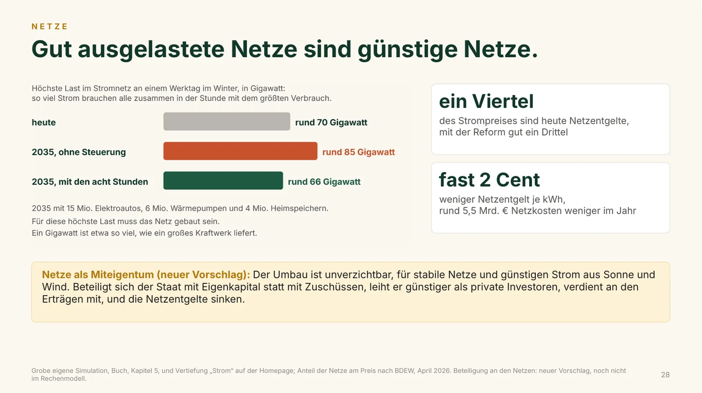
NETZE Gut ausgelastete Netze sind günstige Netze. ein Viertel des Strompreises sind heute Netzentgelte, mit der Reform gut ein Drittel fast 2 Cent weniger Netzentgelt je kWh, rund 5,5 Mrd. € Netzkosten weniger im Jahr Netze als Miteigentum (neuer Vorschlag): Der Umbau ist unverzichtbar, für stabile Netze und günstigen Strom aus Sonne und Wind. Beteiligt sich der Staat mit Eigenkapital statt mit Zuschüssen, leiht er günstiger als private Investoren, verdient an den Erträgen mit, und die Netzentgelte sinken. Grobe eigene Simulation, Buch, Kapitel 5, und Vertiefung „Strom“ auf der Homepage; Anteil der Netze am Preis nach BDEW, April 2026. Beteiligung an den Netzen: neuer Vorschlag, noch nicht 28 im Rechenmodell.
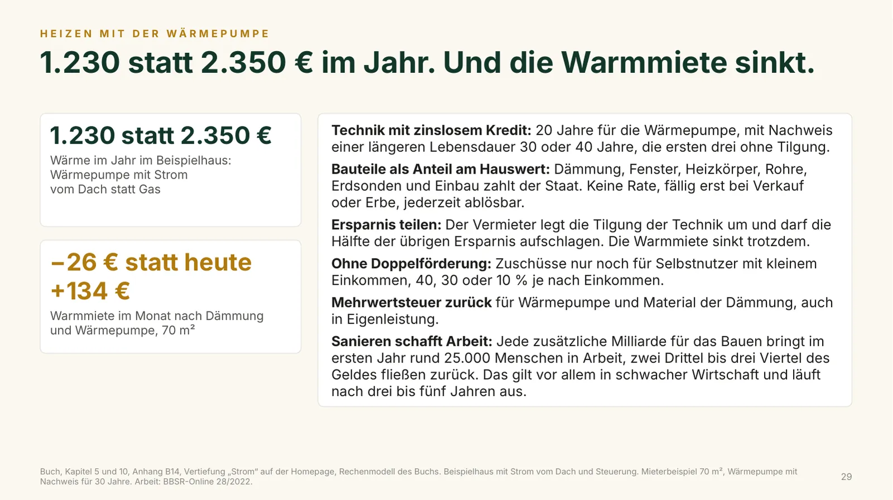
HE I Z E N M IT D E R WÄ R M E PU MP E 1.230 statt 2.350 € im Jahr. Und die Warmmiete sinkt. 1.230 statt 2.350 € Technik mit zinslosem Kredit: 20 Jahre für die Wärmepumpe, mit Nachweis einer längeren Lebensdauer 30 oder 40 Jahre, die ersten drei ohne Tilgung. Wärme im Jahr im Beispielhaus: Wärmepumpe mit Strom Bauteile als Anteil am Hauswert: Dämmung, Fenster, Heizkörper, Rohre, vom Dach statt Gas Erdsonden und Einbau zahlt der Staat. Keine Rate, fällig erst bei Verkauf oder Erbe, jederzeit ablösbar. Ersparnis teilen: Der Vermieter legt die Tilgung der Technik um und darf die Hälfte der übrigen Ersparnis aufschlagen. Die Warmmiete sinkt trotzdem. −26 € statt heute Ohne Doppelförderung: Zuschüsse nur noch für Selbstnutzer mit kleinem Einkommen, 40, 30 oder 10 % je nach Einkommen. +134 € Mehrwertsteuer zurück für Wärmepumpe und Material der Dämmung, auch Warmmiete im Monat nach Dämmung in Eigenleistung. und Wärmepumpe, 70 m² Sanieren schafft Arbeit: Jede zusätzliche Milliarde für das Bauen bringt im ersten Jahr rund 25.000 Menschen in Arbeit, zwei Drittel bis drei Viertel des Geldes fließen zurück. Das gilt vor allem in schwacher Wirtschaft und läuft nach drei bis fünf Jahren aus. Buch, Kapitel 5 und 10, Anhang B14, Vertiefung „Strom“ auf der Homepage, Rechenmodell des Buchs. Beispielhaus mit Strom vom Dach und Steuerung. Mieterbeispiel 70 m², Wärmepumpe mit 29 Nachweis für 30 Jahre. Arbeit: BBSR-Online 28/2022.
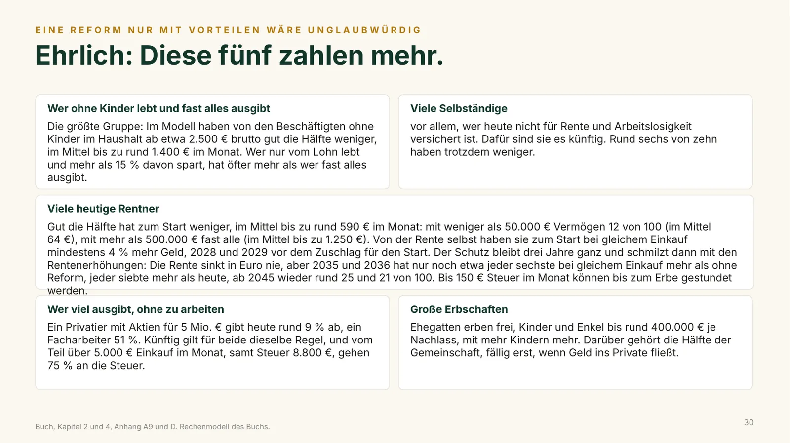
EI N E R E F O R M N U R MI T VOR T E I L E N WÄR E U N G L AU B W Ü R D IG Ehrlich: Diese fünf zahlen mehr. Wer ohne Kinder lebt und fast alles ausgibt Viele Selbständige Die größte Gruppe: Im Modell haben von den Beschäftigten ohne vor allem, wer heute nicht für Rente und Arbeitslosigkeit Kinder im Haushalt ab etwa 2.500 € brutto rund 2 von 3 weniger, versichert ist. Dafür sind sie es künftig. Rund sechs von zehn im Mittel rund 830 € im Monat. Wer nur vom Lohn lebt und mehr haben trotzdem weniger. als 15 % davon spart, hat viel öfter mehr als wer fast alles ausgibt. Viele heutige Rentner Gut die Hälfte hat zum Start weniger, im Mittel rund 490 € im Monat: mit weniger als 50.000 € Vermögen 12 von 100 (im Mittel 64 €), mit mehr als 500.000 € fast alle (im Mittel 990 €). Von der Rente selbst haben sie zum Start bei gleichem Einkauf mindestens 4 % mehr Geld, 2028 und 2029 vor dem Zuschlag für den Start. Der Schutz bleibt drei Jahre ganz und schmilzt dann mit den Rentenerhöhungen: Die Rente sinkt in Euro nie, aber von 2035 bis 2037 hat nur noch etwa jeder sechste bei gleichem Einkauf mehr als ohne Reform, jeder siebte mehr als heute, ab 2045 wieder rund 25 und 21 von 100. Bis 150 € Steuer im Monat können bis zum Erbe gestundet werden. Wer viel ausgibt, ohne zu arbeiten Große Erbschaften Ein Privatier mit Aktien für 5 Mio. € gibt heute rund 9 % ab, ein Ehegatten erben frei, Kinder und Enkel bis rund 400.000 € je Facharbeiter 51 %. Künftig gilt für beide dieselbe Regel, und vom Nachlass, mit mehr Kindern mehr. Darüber gehört die Hälfte der Teil über 5.000 € im Monat gehen 66 % an die Steuer. Gemeinschaft, fällig erst, wenn Geld ins Private fließt. 30 Buch, Kapitel 2 und 4, Anhang A9 und D. Rechenmodell des Buchs.
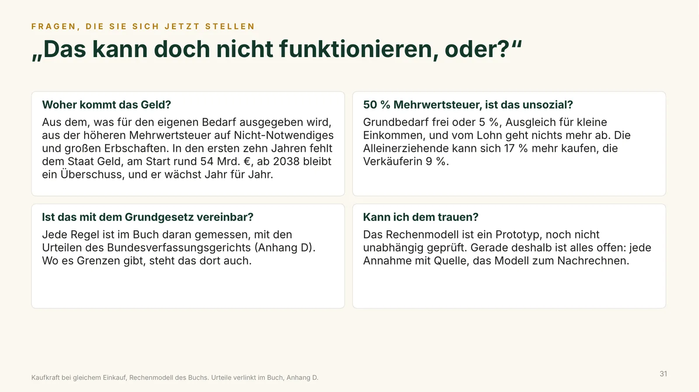
FRAGEN, DIE SIE SICH JETZT STELLEN „Das kann doch nicht funktionieren, oder?“ Woher kommt das Geld? 50 % Mehrwertsteuer, ist das unsozial? Aus dem, was für den eigenen Bedarf ausgegeben wird, Grundbedarf frei oder 5 %, Ausgleich für kleine aus der höheren Mehrwertsteuer auf Nicht-Notwendiges Einkommen, und vom Lohn geht nichts mehr ab. Die und großen Erbschaften. In den ersten zehn Jahren fehlt Alleinerziehende kann sich 17 % mehr kaufen, die dem Staat Geld, am Start rund 58 Mrd. €, ab 2038 bleibt Verkäuferin 9 %. ein Überschuss, und er wächst Jahr für Jahr. Ist das mit dem Grundgesetz vereinbar? Kann ich dem trauen? Jede Regel ist im Buch daran gemessen, mit den Das Rechenmodell ist ein Prototyp, noch nicht Urteilen des Bundesverfassungsgerichts (Anhang D). unabhängig geprüft. Gerade deshalb ist alles offen: jede Wo es Grenzen gibt, steht das dort auch. Annahme mit Quelle, das Modell zum Nachrechnen. 31 Kaufkraft bei gleichem Einkauf, Rechenmodell des Buchs. Urteile verlinkt im Buch, Anhang D.
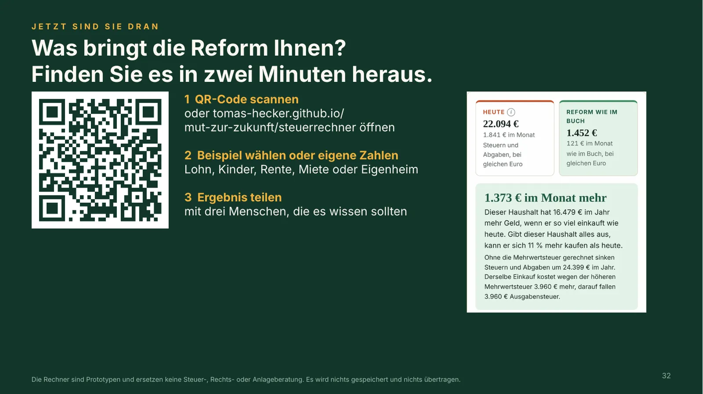
JETZT SIND SIE DRAN Was bringt die Reform Ihnen? Finden Sie es in zwei Minuten heraus. 1 QR-Code scannen oder tomas-hecker.github.io/ mut-zur-zukunft/steuerrechner öffnen 2 Beispiel wählen oder eigene Zahlen Lohn, Kinder, Rente, Miete oder Eigenheim 3 Ergebnis teilen mit drei Menschen, die es wissen sollten 32 Die Rechner sind Prototypen und ersetzen keine Steuer-, Rechts- oder Anlageberatung. Es wird nichts gespeichert und nichts übertragen.
NACHPRÜFEN Die wichtigsten Quellen. Alle anderen stehen im Buch. • Statistisches Bundesamt, Inflation 2022 und 2023 • Ipsos, Historisches Stimmungstief, Juni 2026 • R+V, Die Ängste der Deutschen 2026 • Sachverständigenrat Wirtschaft, Frühjahrsgutachten 2026 • IGES, Entwicklung der Sozialabgaben 2026 • Deutsche Bundesbank, Schuldenstand • Tragfähigkeitsbericht, Drucksache 20/11235 • BDEW-Strompreisanalyse April 2026 • Deutsche Rentenversicherung, Rechengrößen 2026 • Studien zu den fünfzehn Wachstumshebeln: Buch, Anhang C13 Das ganze Buch, kostenlos • Alle Annahmen mit Herleitung: Anhang C10 • Das ganze Buch online und als PDF 33
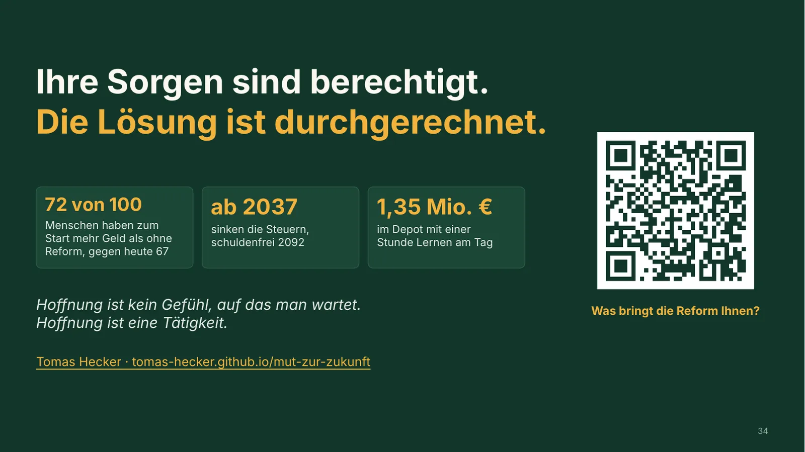
Ihre Sorgen sind berechtigt. Die Lösung ist durchgerechnet. 69 von 100 ab 2038 1,35 Mio. € Menschen haben zum sinken die Steuern, im Depot mit einer Start mehr Geld als ohne schuldenfrei 2099 Stunde Lernen am Tag Reform, gegen heute 63 Hoffnung ist kein Gefühl, auf das man wartet. Was bringt die Reform Ihnen? Hoffnung ist eine Tätigkeit. Tomas Hecker · tomas-hecker.github.io/mut-zur-zukunft 34